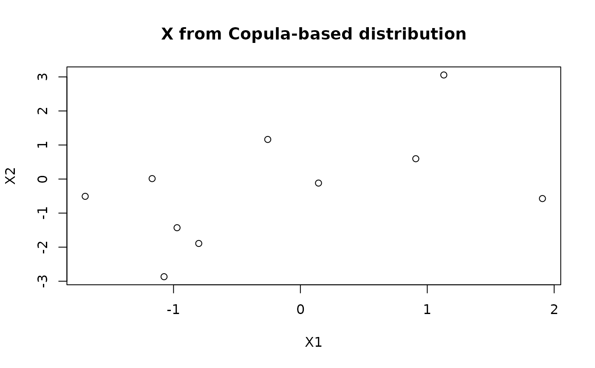

Simulate Data from a Linear Regression Model
simulate_LMdata.RdGenerates datasets from a Linear Model (LM) with flexible control over design matrix, correlation structures, and error distributions.
All stochastic components (error terms, and also design matrices if unspecified) are generated via simulate_IIDdata, a highly general and flexible sample generator supporting almost all univariate and multivariate distributions.
The function supports general, possibly correlated and/or heteroscedastic, error distributions. When the error distribution is independent and identically distributed (IID, meaning all error terms share the same distribution and are mutually independent), users may specify a target signal-to-noise ratio (SNR). In this case, the error variance is automatically scaled to match the desired SNR. SNR control is not supported for non-IID errors.
Arguments
- n_rep
Integer scalar or length-2 vector. If a vector of length 2, the first value gives the number of independent simulated datasets (
n_sim) and the second gives the number of within-dataset iterations (n_iter). Within a dataset, the design matrixXremains fixed but the error terms vary across iterations, producing different response vectors (y). If a single value is given, it is interpreted asn_sim, withn_iter = 1(default).- sim_settings
A named list of simulation parameters, usually constructed via
sim_spec(Default). Common fields (all optional) for the regression models include:- n_subj
Number of subjects (sample size here).
- beta_coeff
Regression coefficient vector. Default: a zero vector of appropriate length.
- SNR
Target signal-to-noise ratio for IID errors. Overrides the error variance in
distr_settings$error_distr. Set toNULL(default) to disable SNR control.- X
Optional pre-specified design matrix. May also be lists of length
n_simto allow dataset-specific designs. If supplied, they override stochastic generation.- p
Dimensions of the design matrix (including intercept).
- include.Xintercept
Logical; whether to add intercept columns in
X.- orthogonalize.X
Logical; If
TRUE, the non-intercept columns ofXare orthogonalized using QR decomposition.
All other components of
sim_settingsare ignored for regression models.- distr_settings
A named list of distribution specifications for stochastic components. Valid entries are:
error_distrandX_distr, specifying the distributions used to generate random errors, and the design matrix, respectively. Each entry is itself a list with elements (seesimulate_IIDdata):- distr_name
Distribution name (e.g.,
"norm","mvnorm","copula").- distr_params
List of parameters for the specified distribution.
- generator
Optional user-supplied function for random generation, enabling simulation from arbitrary or fully custom distributions.
Missing or incomplete entries are automatically completed via
distr_specwith suitable dimension defaults. The default distribution is multivariate normal with zero mean and identity covariance. See @details for more on specification of the error distribution.- seed
Optional integer.If provided, the random number generator (RNG) state is temporarily replaced by this seed and restored upon exit.
Value
A named list (of class "LMdata") containing:
- n
Total number of observations in each simulated dataset.
- y
List of simulated response matrices of length
n_sim. Each matrix has dimensionn × n_iter.- X
List of design matrices of length
n_sim, one per simulated dataset.- sigma_e
List of error standard deviations (length
n_sim). Each entry is a vector of lengthn_iter.- SNR
List of achieved signal-to-noise ratios (length
n_sim). Each entry is a vector of lengthn_iter.- sim_settings, distr_settings
Lists of (possibly updated) simulation and distribution settings used to generate the data.
If a list has only one single element (i.e., n_sim = 1 or n_iter = 1),
it is automatically flattened.
Details
Construction of the design matrix.
If
sim_settings$Xis supplied:Xis used exactly as provided and its column dimension updatesp.If
Xis not supplied:Xis generated usingdistr_settings$X_distr.Intercepts are added after stochastic generation, if requested.
Orthogonalization of non-intercept columns is performed last using the
qrfunction.
Error distribution specification
The error distribution (error_distr) may be:
Univariate with scalar
sigma, which corresponds to IID errors.Multivariate, with a covariance matrix
sigmaof dimension equal to the total number of observations, enabling arbitrary correlation and heteroscedasticity.
IID errors can also be represented through a multivariate specification
with diagonal covariance matrix in sigma.
If sigma is not specified in error_distr$distr_params,
a default IID specification is constructed.
SNR control
When SNR is supplied and the error distribution is IID,
the error variance is automatically scaled to achieve
the target signal-to-noise ratio
(defined as the ratio of variances of signals and errors).
SNR control is not supported for non-IID errors.
Dependencies
Certain distribution choices (e.g., copulas) may require additional packages.
See simulate_IIDdata for details on required packages
and supported distributions.
See also
simulate_IIDdata, distr_spec, sim_spec.
Also summary.LMdata, print.LMdata, plot.LMdata
for S3 methods applicable to the returned object
Examples
# Basic simulation
set.seed(123)
sim1 <- simulate_LMdata()
str(sim1, max.level = 1)
#> List of 7
#> $ y : num [1:10, 1] -0.5605 -0.2302 1.5587 0.0705 0.1293 ...
#> $ X : 'IIDdata' num [1:10, 1] 1 1 1 1 1 1 1 1 1 1
#> ..- attr(*, "dimnames")=List of 2
#> $ sigma_e : num 1
#> $ SNR : num 0
#> $ n : num 10
#> $ sim_settings :List of 15
#> $ distr_settings:List of 2
#> - attr(*, "class")= chr [1:2] "LMdata" "list"
# Multiple replications and iterations
sim <- simulate_LMdata(n_rep = c(2, 3)) # 2 reps × 3 iterations
length(sim$y) # 2 replications
#> [1] 2
dim(sim$y[[1]]) # 50 × 3 iterations (default sample size 50)
#> [1] 10 3
# Non-Gaussian error and multivariate predictors
distr_settings <- list(
error_distr = list(distr_name = "t", distr_params = distr_spec(df = 4)),
X_distr = list(distr_name = "mvtnorm::rmvnorm", distr_params = list(dim = 2, sigma = diag(2)))
)
sim <- simulate_LMdata(
n_rep = 1,
sim_settings = sim_spec(n_subj = 15),
distr_settings = distr_settings
)
# User-supplied design matrices
n_subj <- 10
n <- n_subj
X_user <- matrix(rnorm(n*3), ncol=3)
Z_user <- matrix(rnorm(n*2), ncol=2)
sim_settings <- sim_spec(n_subj = n_subj, X = X_user, Z = Z_user,
beta_coeff = c(1,0.5,-1))
sim <- simulate_LMdata(sim_settings = sim_settings)
# Copula-based generation
if (requireNamespace("copula", quietly = TRUE)) {
library(copula)
normal_cop <- normalCopula(param = 0.6, dim = 2)
distr_settings <- list(
X_distr = list(
distr_name = "copula",
distr_params = distr_spec(
copula = normal_cop,
margins = list(
list(dist="norm", params=list(mean=0, sd=1)),
list(dist="norm", params=list(mean=0, sd=2))
)
)
)
)
sim <- simulate_LMdata(sim_settings = sim_spec(n_subj = 10),
distr_settings = distr_settings)
plot(sim$X[,2:3], main = "X from Copula-based distribution")
}
